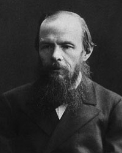

Федір Достоєвський
Роки життя:1821−1881
Читати:
«Злочин і кара» (скорочено)
Народився у багатодітній сім'ї штаб-лікаря московської Маріїнської лікарні для бідних. Батько — дворянин, матір походила з давньомосковського купецького роду. Перші 16 років життя Достоєвський провів у скромній казенній квартирі при лікарні. З дитинства найближчим другом був на рік старший брат Михайло. Попри скромні статки, батько зміг дати синам добру освіту у приватному пансіоні Л. Чермака, одному з найкращих у Москві. Літературні зацікавлення братів визначилися рано. Під впливом В. Скотта й А. Радкліфа Федір створював «романи з венеційського життя»; журнал «Бібліотека для читання», підписаний для синів батьком, знайомив з новітньою зарубіжною літературою — О. де Бальзаком, Ж. Жаненом, Е. Т. А. Гофманом та ін. З російських авторів у сім'ї любили М. Карамзіна, В. Жуковського, О. Пушкіна. Достоєвський виховувався «у родині російській і побожній», де знайомилися з Євангелієм «чи не з раннього дитинства». «Мені було всього лише десять років, коли я знав майже всі головні епізоди російської історії з Карамзіна, якого вголос вечорами читав нам батько», — згадував згодом письменник. Після смерті від сухот матері навесні 1837 р. батько повіз старших синів у Петербург і віддав у підготовчий пансіон К. Костомарова, після закінчення якого обидва брати повинні були стати «кондукторами» Головного інженерного училища, куди, проте, прийняли лише Федора — старший брат не пройшов медичної комісії і його відправили на службу у Ревельську інженерну команду.
Вперше Достоєвський на тривалий час розлучився з товаришем дитячих ігор. Проте зв'язок між братами не переривався завдяки жвавому листуванню, де обговорювалася творчість Гомера, Ж. Расі-на, Й. В. Гете, О. де Бальзака, В. Гюго, і в першу чергу, Ф. Шиллера, яким Достоєвський услід за братом «марив» і якого «визубрив усього напам'ять». У цих листах висловлені думки, які визначили духовний пошук усього життя Достоєвського: «Людина є таємницею. її потрібно відгадати, і якщо будеш її відгадувати все життя, то не кажи, що згайнував час; я займаюся цією таємницею, оскільки хочу бути людиною»; «природа, душа, Бог, любов ... пізнаються серцем, а не розумом».
У 1839 р. несподівано помер батько Достоєвського (за офіційною версією, від апоплексичного удару). Ймовірніше, проте, що грубого і дріб'язково-уїдливого поміщика (у 1831 р. Достоєвські купили два невеликі сільця у Тульській губернії, куди маленький Достоєвський упродовж кількох років приїжджав на літні канікули) вбили селяни. Новина про смерть батька приголомшила юнака і спровокувала важкий нервовий приступ — передвістя майбутньої епілепсії, до якої в нього була спадкова схильність.
Училище, в якому Достоєвський провчився майже шість років (1838-1843), Достоєвський вважав своєю «помилкою». Попри те, у ньому він суттєво поповнив свою освіту. Найголовніше, чого Достоєвський набув, — відчуття форми, перш за все просторової, архітектурної. Окрім майстерних міських пейзажів, що пронизують усі його твори, це підтверджують чудові «психологічні» портрети «скривдженого» будиночка у «Білих ночах» чи рогожинського дому в «Ідіоті». Не прослуживши й року після здобутої спеціальності, Достоєвський в серпні 1844 р. вийшов у відставку в чині поручника. Тоді ж за невелику одноразово виплачену суму, з якою вирішив розпочати нове життя, відмовився від спадкових прав на тульські маєтки. Тепер єдине джерело його прибутку — література. У середині 1844 р. у журналі «Репертуар і пантеон» з'явилася перша друкована робота Д. — переклад роману О. де Бальзака «Євгенія Гранде».
Упродовж 1844—1845 pp. Достоєвський захоплено працював над своїм першим романом «Бідні люди» («Бедные люди»). 15 січня 1846 р. його романом відкрився «Петербурзький збірник» («Петербургский сборник»), альманах «натуральної школи». Ідеолог початкового етапу «гоголівського напряму», В. Бєлінський цінував у «Бідних людях» «гуманну думку», «дивовижну істину у змалюванні дійсності», але водночас і дорікав за багатослів'я та надмірну «балакучість». У «гоголівському світі» автор «Бідних людей» зробив, за словами М. Бахтіна, «коперниківський переворот», обравши предметом зображення «не дійсність героя, а його самосвідомість як дійсність другого порядку». Епістолярна форма «Бідних людей» підкреслювала значущість «нового слова», яке Дєвушкін каже особисто. Недозріла, з точки зору В. Бєлінського, «манера» Достоєвського була новаторським прийомом, що дозволяв висвітити зсередини процес становлення особистості, ствердити гідність «маленької людини».
Внутрішня доля особистості — справжня тема вже найперших, «чиновницьких», творів Достоєвського. Починаючи з «Хазяйки», він практично заперечує і традиційну «гоголівську» тематику — його героєм стає «мрійник», відірваний від реальності дивак, котрий живе у світі романтичних ілюзій. І Ординов, і герой «Білих ночей» («Белые ночи», 1848) — люди освічені, обдаровані; вони дотримуються поглядів, близьких самому авторові. Невипадково поява проблеми «мрійництва» у Достоєвського збігається із захопленням утопічним соціалізмом, участю у гуртках бр. Бекетових, М. Петрашевського, С. Дурова. У «Петербурзькому літописі» («Петербургская летопись», 1847) Достоєвський писав, що «...увесь Петербург є не чимось іншим, як зібранням величезної кількості маленьких гуртків», оцінюючи останні як своєрідну перехідну сходинку між усамітненням і справжнім суспільним життям, котра ближча, проте, до першого полюсу. Герой «Білих ночей» не лише до певної міри автопортрет Д. 40-х pp., а й збірний портрет його друзів по гуртках. «Мрійництво «Білих ночей» не поодиноке у творчості Достоєвського. Йому відведене місце і в «Бідних людях», і в «Неточці Незвановій»; ...воно розкривається в «Хазяйці» (Комарович В.). Напівхристиянський ідеал утопістів, нудьга за «новим містом», де всі будуть «наче брати з братами» (Настенька з «Білих ночей»), прослідковуються у мрійництві багатьох героїв раннього Достоєвського. Сам термін «мрійництво», перейшовши у зрілу творчість, буде до кінця життя осмислюватися письменником у зв'язку з соціалістичними ідеями. Гуманізм, усвідомлений в антропологічному дусі, одухотворює всі твори Достоєвського 40-х pp.
Літературні зацікавлення домінували в утопічно-гуманістичних гуртках 2-ої пол. 40-х pp., зокрема і в гуртку «петрашевців», який відвідував і Достоєвського. Проте у зв'язку з подіями французької революції 1848 р. і тією роллю, яку відіграли в ній соціалісти, уряд вирішив припинити поширення утопічних ідей. До Петрашевського був підісланий провокатор, і в ніч із 22 на 23 квітня 1849 р. Достоєвського разом з іншими учасниками заарештували й ув'язнили у Петропавлівській фортеці. Мужньо переживши семимісячне слідство й обряд страти 24 грудня 1849 p., стоячи біля ешафота, він почув рескрипт про несподіване помилування:»...відставного поручника Достоєвського за ... участь у злочинних намірах, поширення листа літератора Бєлінського, сповненого зухвалими висловами проти православної церкви та верховної влади... позбавити всіх прав власності та заслати на каторжанську роботу у фортецях на 4 роки, а потім рядовим».
У січні 1850 р. Достоєвського доправили в Омський острог. Чотири роки провів письменник у «мертвому домі». Після виходу з нього Достоєвського зарахували рядовим у Сибірський 7-й лінійний батальйон, розквартирований у Семипалатинську, куди його й доправили по етапу у березні 1854 р. Після смерті Миколи І і початку ліберального царювання Олександра II покарання Достоєвського, як і багатьох політичних в'язнів, було пом'якшене. Незабаром Достоєвському надали чин унтер-офіцера, а згодом — прапорщика, а також повернули колишні дворянські права. У відставку Достоєвський вийшов у чині під-поручника у 1859 р. У 1857 р. у Кузнецьку Достоєвський закохався й одружився з Марією Дмитрівною Ісаєвою, хворою та неврівноваженою. Сімейне життя складалося важко. У роки неволі Достоєвський продовжував працювати як письменник: у Петропавлівській фортеці, чекаючи на присуд, написав оповідання «Маленький герой», у Семипалатинську — повісті «Село Степанчикове та його мешканці» та «Дядечків сон», більше того — в самому острозі вів записи тюремного фольклору, що ввійшли у «Сибірський зошит».
Клопотання рідних і друзів письменника про дозвіл повернутися в європейську Росію та друкуватися закінчилися вдало: у серпні 1859 р. Достоєвський із дружиною та пасербом приїхав у Твер, а в грудні того самого року отримав дозвіл на проживання у Петербурзі і з початком 1860 р. активно включився у літературне життя столиці. Цей час — розпал «ліберальної весни», різкого пожвавлення суспільного життя в Росії. Разом із братом Михайлом письменник відвідував гурток колишнього «петрашевця» А. Мілюкова. У тому самому 1860 р. Достоєвський написав оголошення про підписку на журнал «Час» («Время»), своєрідний маніфест із соціально-політичних та естетичних питань. Естетичні погляди Достоєвського найповніше виразилися у статті «Панбов і питання про мистецтво», опублікованій у другому номері «Часу» (1861). Письменник розвинув тут багато ідей В. Майкова (про первинний характер «художності» щодо тенденційності, про «службову» роль мистецтва як провідника передового світогляду, про необхідність у літературі ідеалу, який урівноважує «негативну» лінію); відчувається неприхований вплив учення про красу Ф. Шиллера; обстоюється високе значення О. Пушкіна.
У травні 1863 р. журнал «Час» був несподівано закритий. Після тривалих клопотань М. Достоєвському вдалося у січні 1864 р. домогтися дозволу на видання журналу «Епоха» («Эпоха»). Після несподіваної смерті брата в липні 1864 р. заплутані журнальні справи цілковито перейшли до рук Достоєвського. Крім того, він взяв під опіку братову сім'ю і зобов'язався виплатити його борги. У червні 1865 р. редакція «Епохи» збанкрутувала. Щоби вийти з фінансового тупика, Достоєвський уклав контракт із книговидавцем Ф. Стеловським: за три тисячі карбованців він продав йому право на видання повного зібрання своїх творів у трьох томах і в рахунок тієї самої суми зобов'язався написати новий роман до 1 листопада 1866 р. У випадку невиконання цього зобов'язання видавець отримував право на передрук усіх майбутніх творів Достоєвського без будь-якої винагороди авторові, тим самим загрожуючи позбавити його засобів до існування. Ще у квітні 1864 р. від туберкульозу померла дружина Достоєвського.
1860—1864 pp. сам Достоєвський згодом назвав часом «переродження переконань». Очевидно, що відмова від соціалістичних ідеалів відбулась у письменника не стільки в результаті каторги, скільки в процесі зіткнення з «плинною дійсністю» 1-ої пол. 60-х pp. Художні твори цих років також відтворюють еволюцію світогляду письменника. У «Записках із Мертвого дому» (1860) в цілому ще зберігається антропологічна концепція «доброї» людської натури, але саме тут уперше в Достоєвського з'явилося чітке уявлення про свободу як основу особистості.
У 1861 р. в журналі «Час» був опублікований роман «Зневажені та скривджені» («Униженные и оскорблённые»). У традиційні для письменника мотиви 40-х pp. (співчутливе змалювання «маленьких людей», людську гідність яких зневажають) вплітаються нові ноти. Трагедія Наташі Іхменєвої зумовлена не стільки зовнішніми, скільки внутрішніми, морально-психологічними причинами. Вона і жертва, і мучителька водночас. Новим у творчості Достоєвського став також тип кн. Валковського — відверто хижого, цинічного, жорстокого, розумного.
Літні місяці 1862 і 1863 pp. письменник провів за кордоном, відвідавши Німеччину, Англію, Францію, Італію та ін. країни. Спостереження, зроблені в першій поїздці, вилились у «Зимові нариси про літні враження» («Зимние заметки о летних впечатлениях», 1863), надзвичайно важливі для розуміння світоглядницького зрушення, що відбувалося з Достоєвським у ці роки. Тут уперше розгорнута одна із ключових проблем Достоєвського-романіста — співвідношення Росії та Європи. «Спрага страждання», непомутнілий божественний образ Христа, який він відкрив у серці російського народу, робили, за Достоєвським, неприйнятними для Росії західні, революційні, засоби перевлаштування. Особливий, самобутній шлях рідної країни до «земного раю» — ось соціально-політична програма Достоєвського поч. 60-х pp.
«Записки із підпілля» («Записки из подполья», 1864), за висловом О. Долініна, — «пролегомени» до всієї подальшої творчості Достоєвського. Якщо «Мертвий дім» — серія лабораторних дослідів, проставлених самим життям, то в «Записках із підпілля» — результат цих дослідів, нова «речовина», отримана в результаті спроб і сумнівів. Про героя підпілля сам автор у нарисі «Для передмови»(187'5) говорить: «Я горджуся тим, що вперше вивів справжню людину російської більшості...» У цьому творі вперше прямо поставлений знак рівності між особистістю людини та її свободою: «Що ж таке людина без бажань, без волі і без хотінь, як не штифтик в органному валі?»
У «Записках із підпілля» вперше чітко позначена ще одна наскрізна у подальшій творчості Достоєвського проблема — естетизм, розуміння краси. Герой підпілля, цей спадкоємець «демонічних» романтиків першої третини XIX ст., керується у своїй поведінці не етичними, а естетичними критеріями, через те найвища доброчесність і крайня підлість для нього однаково привабливі. Байронічне захоплення злом трансформується у насолоджування своєю зневаженістю, смакування пороків і дріб'язкових гидот. Він боїться лише бути смішним і посереднім, оскільки це є естетично невиразним.
Задля поліпшення здоров'я восени 1865 р. письменник поїхав за кордон і там, у курортному німецькому містечку Вісбадені, розпочав роботу над романом «Злочин і кара» («Преступление и наказание», 1866), у якому відобразився весь складний і суперечливий шлях його внутрішніх пошуків. У центрі нового твору — злочин, ідеологічне вбивство. «Молодий чоловік, виключений зі студентів університету, ...який жив у крайній нужді, через легковажність, через хисткість у поняттях підпавши під вплив певних дивних «незакінчених» ідей, котрі носяться у повітрі, зважився разом вийти із кепського свого становища» — вбити й обікрасти стару-лихварку, нікчемну «вошу». На її гроші Раскольников мріє зробити тисячі добрих справ, у першу чергу врятувати від ганьби та злиднів матір і сестру. Але це не єдина причина злочину: герой, перебуваючи у полоні «теорії» про дві категорії людей, прагне перевірити, до якої з них належить він. Ті обранці, котрі «мають право», «людинобоги», можуть дозволити собі переступити через моральні норми, написані для «нижчої» більшості. Так поміж «незакінчених» ідей західного походження опиняються поряд, за Достоєвським, думка про революційне насильство заради соціальної справедливості («кров по совісті») і горда «ідея Наполеона». їх об'єднує відчуженість від «живого життя», що живиться від російських національних, «істинно християнських» коренів, тому що Європа, вважає письменник, забула справжнього Христа і тому відірвалася від джерел буття. Усі ідеї, що йдуть звідти (як, приміром, буржуазний утилітаризм Лужина, «комуністичне» співжиття Лебезятникова, «наполеонізм» Раскольникова) мають руйнівний, нігілістичний характер. Після вчиненого злочину Раскольников вирішує заявити на себе, «щоби хоча загинути на каторзі, але примкнути знову до людей... Закон правди та людської природи взяли своє...». Соня Мармеладова і Свидригайлов уособлюють полюси можливого розвитку особистості центрального героя. Сумирна та жертовна Соня, котра живе за євангельськими заповідями, спрямовує Раскольникова на шлях каяття, відмови від «теорії», з'єднання з людьми та життям. І, навпаки, вбивця та цинік Свидригайлов приваблює його також як «той, який переступив» і при цьому здатний розкошувати та насолоджуватися життям. Самогубство Свидригайлова — доказ неминучої згубності аморалізму — і стало для Раскольникова останнім поштовхом до зізнання.
Трагедія Родіона розгортається на фоні безмірних страждань «зневажених і скривджених» мешканців Петербурга. Антибуржуазний пафос роману проявився і в співчутливому змалюванні побуту бідняків (сімей Мармеладових і Раскольникових), і в різкому осуді великих і дрібніших хижаків (Альони Іванівни, вдови Рессліх, Коха, Лужина та ін.), і в гострій постановці тем алкоголізму та проституції.
Достоєвський мав на меті прослідкувати «психологічний процес злочину», через те тут яскраво проявилася своєрідність психологізму письменника, яка визначається перш за все двоїстістю духовно-морального ядра героя-«людинобога», зіткненням у ньому «непорушних ідей» і «несумісних» почуттів. Для Достоєвського є чужою плинна «діалектика душі», побудована на півтонах. Психологічний малюнок залежить не від внутрішніх впливів «середовища», а від внутрішніх поштовхів духовних імпульсів, що прориваються у сферу душі.
«Злочин і кара» відкриває новий, вищий етап творчості Достоєвського. Тут він уперше виступив як творець принципово нового типу роману у світовій літературі, який М. Бахтін назвав поліфонічним (багатоголосим). Учений підкреслював відносну свободу, самостійність і невикінченість героя та його «слова», яке може до кінця розвинути свою внутрішню логіку в умовах поліфонічного задуму:»...не численність характерів і роль у єдиному об'єктивному світі... а саме численність рівноправних свідомостей з їхніми світами поєднується тут».
У жовтні 1866 р. робота над «Злочином і карою» була тимчасово перервана через необхідність виконання умов кабальної угоди з книговидавцем Стеловським. З допомогою стенографістки Достоєвському вдалося менш ніж за місяць написати роман «Гравець» («Игрок»), у якому центральною стала актуальна для письменника проблема Росії та Європи. Але, окрім того, твір повинен був, на думку автора, привернути увагу «як наочне та детальне змалювання гри в рулетку... своєрідного пекла, своєрідної каторжанської «бані». Олексій Іванович — «не звичайний гравець, як скупий лицар Пушкіна — не звичайний скнара. Він поет на свій лад...» У цих словах письменника відчутні особисті нотки, оскільки Достоєвський під час закордонних мандрівок у 1865-1867 pp. довелося осягти згубну «поезію» рулетки. Проте він знайшов у собі сили назавжди відмовитися від гри.
У 1867 р. Достоєвський одружився зі своєю помічницею-стенографісткою Анною Григорівною Сніткіною, котра стала для нього по-справжньому близьким і відданим другом. У Достоєвських було четверо дітей, проте двоє з них померли у ранньому дитинстві. У тому ж 1867 p., бажаючи хоч на певний час позбутися домагань кредиторів, Достоєвський із дружиною відправився в Західну Європу, зупинявся в Німеччині, Швейцарії, Італії. «Країна святих див» цього разу подарувала письменникові глибокі естетичні враження: у картинних галереях Дрездена, Базеля, Флоренції він милувався відомими полотнами. У ці роки письменник працював над двома романами — «Ідіотом» («Идиот», 1868) і «Бісами» («Бесы», 1870-1871); останній закінчив уже в Росії.
Робота над романами і поява їхніх частин у пресі йшли паралельно, що взагалі характерно для письменницького життя Д. «Скільки разів траплялося за останні чотирнадцять років його життя, — згадувала згодом А. Достоєвська, — що дві-три глави вже були опублікованими в журналі, четверта набиралася в друкарні, п'ята йшла поштою у «Російський вісник» («Русский вестник»), а інші були ще не написані...». Борги брата, які Достоєвський взяв на себе, значно погіршували умови публікації його творів: на відміну від І. Тургенева, Л. Толстого, І. Гончарова й ін., незабезпечений Достоєвський повинен був особисто пропонувати свою працю журналам і в результаті отримував суттєво менше.
Починаючи зі «Злочину і кари», письменник щедро використовував у своїх романах кримінальну хроніку, вводячи в сюжет події реального життя: наприклад, певні обставини справи вбивці Герасима Чистова; долі французького авантюриста Ласенера та багато ін. — в основі фабули «Злочину і кари»; нашуміла справа про вбивство Жемариних прямо обговорюється на сторінках роману «Ідіот»; матеріали процесу над терористичною групою С. Нечаева (1871) використані в романі «Біси» і т. п.
У «Злочині і карі» людина-«універс» була показана в основному на негативному полюсі своєї «широкості». В «Ідіоті» автор поставив перед собою протилежне завдання — «зобразити цілком чудову людину». Це була ідея «старовинна й улюблена», що сходила до попереднього «рожевого» світогляду письменника. «У світі є лише одна позитивно-чудова особа — Христос», через те головний герой зорієнтований перш за все на його образ. Проте і в «Ідіоті» це значною мірою гуманістичний, а не церковно-православний Христос; ідеальна людина, а не Бог, що проявляється і в постійному прагненні «князя Христа» Мишкіна створити «земний рай» (напр., любовне братство дітей у Швейцарії), і в акцентуванні його людської природи («широкості», тобто поряд із просвітленістю, переживання чужості світу та людям; «подвійних думок»; соромливості через небайдужість до оцінок інших людей і т. п.); і в його двоїстості (в емпіричному плані — «смішний дурник», «ідіот»; у метафізичному — мудрець і проповідник); і в явному перегуку образу героя з «природною людиною» Ж. Ж. Руссо. «Ідіот» — це остання спроба Достоєвського втілити соціально-утопічний ідеал: князь Мишкін покликаний подолати навколишнє зло та насилля, жорстокі пристрасті та користолюбство однією лише проповіддю самовдосконалення й особистим прикладом. Він вірить, що, коли всі люди житимуть «головно розумом», вони відразу ж опиняться в раю. Проте реалістичний метод зображення вступив у суперечність із первісним авторським завданням, «художність» перемогла «тенденцію». Незважаючи на благодатний вплив, справлений ним на Бурковського, Колю Волгіна, Євгенія Павловича та ін., фактичні наслідки «діяльності» князя гнітюче сумні: гине Анастасія Філіппівна, внутрішньо зломлена Аглая, стає вбивцею Рогожин, вмирає, бунтуючи проти світопорядку, Іполіт. «Рай на землі не легко дістається...» — слушно зауважує Мишкіну князь Щ. Самого звернення до «живого життя», яке є красою як «нормальність, здоров'я», недостатньо для відродження. Краса не в змозі «врятувати світ» — вона сама потребує порятунку, спотворюється і перероджується, переконує Д. на прикладі доль Анастасії Філіппівни й Аглаї. «І ось ідея «Ідіота» майже луснула», — констатує Достоєвський, закінчуючи роботу над романом. Трагічний колорит твору пов'язаний із неможливістю утопічного «раю на землі». Віднині Достоєвський прискіпливіше вглядається у власне християнське вчення про долі світу та людства, що позначилося на трьох наступних романах, які у багатьох моментах виросли із невтіленого «Житія великого грішника» (плани 1869-1870 pp.). Герой задуманої епопеї повинен пройти через усі зваби сучасного світу: егоїстичне самоутвердження через «мільйон», соціально-утопічну мрію про влаштування щастя людства ціною неминучої відмови від свободи особистості, «людинобога» й атеїзм, — перш ніж віднайти справжній ідеал у єднанні з божественною правдою. «Головне питання, що проходитиме через усі частини, — існування Боже», — писав Достоєвський. Проте химерне поєднання утопічних і православних поглядів збережеться навіть в останніх творах письменника.
Задум «Бісів» був спричинений роздумами Достоєвського про мету і діяльність підпільного революційного товариства, очолюваного С. Нечаєвим, крайньою нігілістичною програмою котрого було заперечення всіх вироблених історією морально-етичних норм, всезагальне знищення. За перипетіями нігілістичної змови, мовби освітлюючи їхнім внутрішнім світлом, проглядається другий план твору — релігійно-філософський роман-трагедія про «великого грішника» Ставрогіна, пронизаний апокаліптичною символікою. Як втілення розумового та низькоприродного демонічного начала, цей герой з'являється у творі в стані внутрішньої кризи: продовжувати йти шляхом зла нікуди — життєві сили вичерпані, попереду лише небуття. Він захоплюється «новою думкою» — угамувати гординю, стати на шлях покути її воскресіння. Звідси намір оголосити шлюб із Хромоніжкою, не мститися за ляпас Шатову і т. п. Але відірваність від народної «богоносності», утопічне прагнення врятуватися однією власною «думкою» роблять ці спроби марними: «врятуватися» лише своїми силами, без Божої допомоги, людина, за християнсько-церковним ученням, яке тут поділяє і Достоєвський, не може. І якщо Ставрогін, маючи «безмежну» силу, не в змозі нічого змінити у своїй долі, то тим паче приречені звичайні люди, котрі перебувають у зоні його впливу: загибель Шагова, Кирилова, Хромоніжки, Лізи Тушиної та ін. закономірна. Сатанізм головного героя проявляється і в особливому естетизмі. «Ви на обидвох полюсах... знайшли збіг краси, однаковість насолоди», — зауважує Ставрогіну Шатов. У насильстві над Матрьошею, в одруженні з Лябядкіною — гидкий, підлий, потворний «полюс». Серед головних причин загибелі «Премудрого змія» не лише розмисловість, а й естетизм: невдача сповіді у святого старця Тихона пов'язана зі страхом видатися смішним і жалюгідним, що натомість каяття викликає у Ставрогіна останній приступ зневаги та злості до людей.
У «Бісах» Достоєвський остаточно знайшов ту своєрідну манеру розповіді — не від автора, не від головного героя, а від хронікера-очевидця, який не знає внутрішніх пружин подій, — котра перейде потім у «Підліток» і «Брати Карамазовы». Це допомогло письменникові досягти видимої об'єктивності викладу і водночас зберегти таємничість і сюжетну захопливість.
У травні 1872 р. Достоєвські переїхали на літо з Петербурга у Стару Руссу, тихе невеличке містечко у Новгородській губернії. Відтоді вони приїжджали туди щоліта, у 1874 р. — залишилися зимувати, а в 1877 р. купили скромну дачу. У Старій Руссі Достоєвський майже цілком написав романи «Підліток» і «Брати Карамазови», багато розділів «Щоденника письменника», «Слово про Пушкіна».
З 1873 р. Достоєвський став відповідальним редактором журналу «Громадянин» («Гражданин»), у якому почав публікувати «Щоденник письменника» («Дневник писателя»), своєрідний моножурнал, де відгукувався на важливі тогочасні політичні події, аналізував хід судових процесів, порушував актуальні моральні питання. Відверта публіцистика та прямий відгук на події перемежовувались у «Щоденнику» з художніми творами, які набули самостійного значення: «Хлопчик у Христа на ялинці», «Бобок», «Сон смішного чоловічка», «Покірлива». Автор «Щоденника» поступово ставав учителем життя для тисяч росіян. Він листувався з багатьма людьми, приймав численних відвідувачів. Видання «Щоденника» перервалося в роки роботи над романами «Підліток» (1874—1875) і «Брати Карамазови» (1878— 1879), але повсякчас поновлювалось і тривало аж до січня 1881 р.
Як і попередні, роман «Підліток» присвячений теперішньому та майбутньому Росії, але акцент тут переміщений на майбутнє. Герой-оповідач — юнак, «підліток»; від того, яка «ідея» домінує в ньому та його однолітках: «мільйон», «золотий вік» чи Нагірна проповідь, — залежать подальші долі країни. Різноманітні люди оточують Аркадія Довгорукого. Це перш за все його батько Версілов, російський аристократ, який піднявся до вершин європейської культури, але відірваний від національних коренів. Проте він як безцінне зернятко носить у душі «російську ідею» — здатність «всесвітнього вболівання за всіх». Як і інші гуманістичні шукачі соціальної справедливості, Версілов також захопився мрією про «золотий вік», без якого «народи не хочуть жити і не можуть навіть і померти!» Проте цю мрію він вважає нехай і шляхетною, але «помилкою людства», і його думка про «золотий вік» за суттю своєю глибоко песимістична.
Підліток Аркадій, кровно пов'язаний з народно-православною стихією через свою матір-селянку і «законного» батька, «народного святого» Макара Долгорукого, є тим «стовбуром», рухаючись по якому життєві соки можуть наситити майже всохлу крону дворянської культури.
У травні 1878 р. письменник разом із В. Соловйовим здійснив поїздку у ковельську Оптину пустинь, центр російського «старецтва», під час якої повідомив супутнику головну думку майбутнього роману «Брати Карамазови» — «церква» як позитивний суспільний ідеал. «Церкву» Достоєвський трактував як любовне братство людей, у якому «кожен перед всіма за всіх винен; не знають лише цього люди, а якби дізналися — зараз був би рай!» Так «давня мрія» про «золотий вік», попри все зберігаючись в основних рисах, переростає в покладання надій на «царство Боже», здійснення якого на землі залежить від морального стану людей. У конкретний емпіричний світ роману постійно вриваються «світи інші», оселі Бога та диявола, з'являється містичний ореол, «фантастика»: наприклад, дивовижне перетворення Альоші, який цілує землю, або розмови Івана Федоровича з Чортом. Взаємопов'язаність усього живого, взаємо проникність «світів» — головна думка «Братів Карамазовых».
Реальний, соціально-історичний шар твору — панорама сучасної Росії. Кожен із героїв, як зазвичай у Достоєвського, є втіленням певної «ідеї». Зіткнення цих життєвих установок і визначає дію роману. Огидний у своєму цинізмі та розбещеності старий Карамазов — своєрідний символ смерті та загнивання російського суспільства 60-х pp. Старший син, Дмитро, — людина стихійна, «широка», у ньому добро перемішане зі злом. Він заплутується у своїх пристрастях, він заходить у моральну безвихідь; але, попри все, в його душі, — запорука майбутнього воскресіння в іншому, праведному житті. «Винуватість за всіх», яку несподівано відчуває Митя після звинувачення його у вбивстві батька, передбачає хресний шлях страждання, покутування: через те герой готується в Сибіру заспівати «гімн Богу». Дмитра притягує до Альоші, який є втіленням справжнього «живого життя». Навпаки, з Іваном, який уособлює могутність заперечення, чари зла, в нього немає нічого спільного, їхні стосунки суто зовнішні. Саме Іван — справжній, «по ідеї», вбивця батька. Смердяков — жалюгідна постать — лише виконавець його злої волі. Іван такий самий нігіліст (у соціальному, моральному й онтологічному планах), як Раскольников і Ставрогін. На цій дорозі його чекають не моральний подвиг, як Альошу, не відродження до нового життя, як Дмитра, а крах особистості (божевілля) і смерть (свідчення цьому — самогубство Смердякова). Апофеоз нігілізму у творі, та й у всій творчості Достоєвського — створена Іваном поема «Великий інквізитор».
«Брати Карамазовы» письменник задумував як серію романів; проте написав лише перший, який «майже навіть і не роман, а тільки один момент із першої юності мого героя» — «раннього людинолюбця» Альоші Карамазова, покликаного втілити у житті заповіти свого монастирського наставника старця Зосими. Проте як діяч у цьому першому і єдиному романі практично не показаний.
Одна з провідних в останньому творі Достоєвського — наскрізна у його творчості тема краси, яка постає аж ніяк не «нормальністю» та «здоров'ям», а «страшною та жахливою річчю». Письменник знову підкреслює її двоїстість, почасти — вабливість, «інфернальність»: «Тут диявол із Богом бореться, а поле бою — серця людей». Краса — стихія, пов'язана з «широкістю» людської особистості, котра «вже з ідеалом содомським у душі не заперечує й ідеалу Мадонни». Як для Героя підпілля, Свидригайлова та Ставрогіна, естетизм багато в чому спричинює трагедію Дмитра Карамазова. Проте «нова людина», яка народилася в Миті, через те й нова, що вже не естетична, а етична.
Наприкінці 70-х pp. Достоєвський постійно виступав перед аудиторією з читанням розділів із власних творів, уривків із М. Гоголя, віршів О. Пушкіна, віддаючи особливу перевагу «Пророку». Все частіше самого автора «Щоденника письменника» пошановували цим званням, яке остаточно закріпилося за ним після промови на відкритті пам'ятника Пушкіну у Москві 8 червня 1880 р.
Багато років письменник страждав від трьох важких хвороб: епілепсії, емфіземи легень і, ймовірно, туберкульозу. Далися взнаки і творчі перевантаження, і нелегка доля. Не дивно, що Достоєвський передчасно помер. За його труною йшов багатотисячний натовп, біля могили на Тихвинському кладовищі Олександро-Невської лаври проголошувалися полум'яні промови.
XX століття з його соціальними потрясіннями та духовною переорієнтацією людства — час справжнього визнання геніального письменника. Твори Достоєвського перекладені десятками мов і їх читають із неослабним інтересом, який перш за все спричинений запропонованою тут новою концепцією людської особистості.